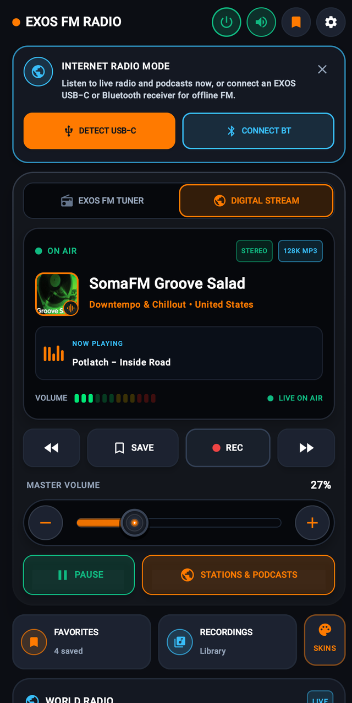
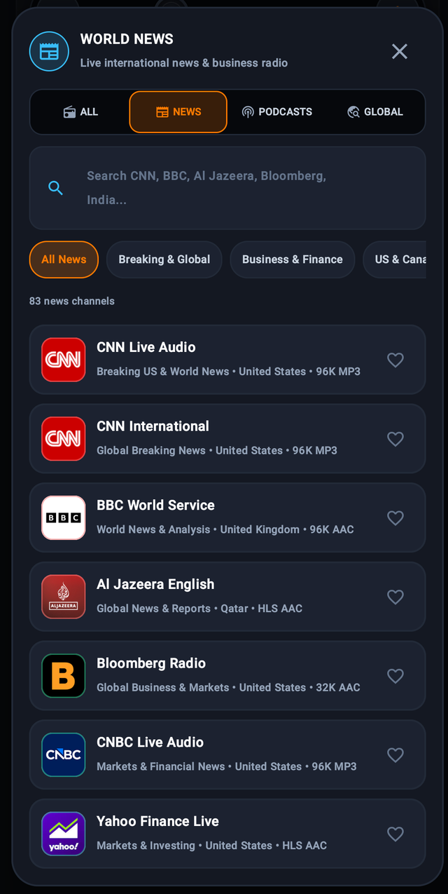
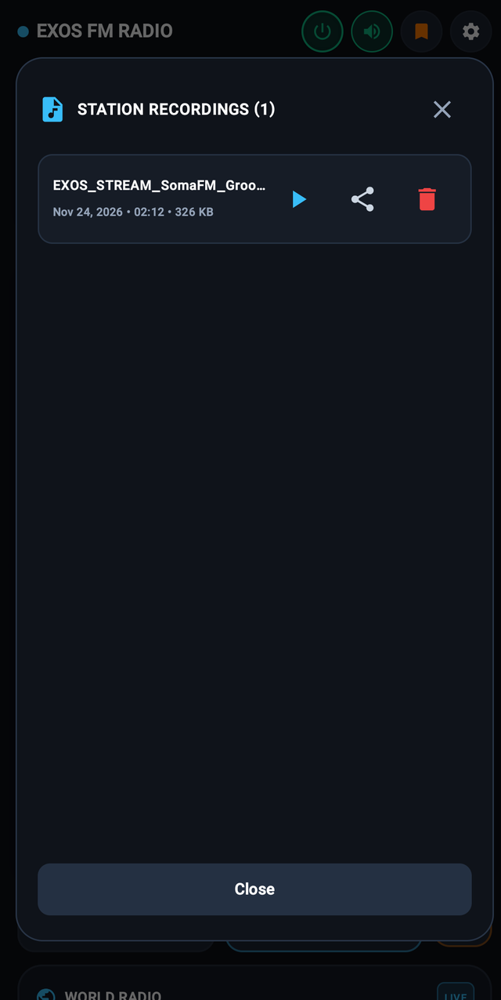

Worldwide Radio, Podcasts & Offline FM Hardware Manual
Everything you need to stream 200+ global stations, record live broadcasts, customize console themes and text sizes, and pair the optional EXOS FM Receiver for offline over-the-air FM reception on Android.
1. World Radio, News Hub & Podcasts
EXOS FM Radio Tuner opens straight into Digital Stream mode so you can start listening immediately with no hardware required.
- ALL Tab: Filter 200+ live stations across 38 countries by genre (Storytelling, Music, Jazz, Classical, Sports, Kids & Family, Business) or by country.
- NEWS Tab: Dedicated world news hub featuring CNN, BBC World Service, Al Jazeera, Bloomberg Radio, CNBC, NPR, and regional news filter pills.
- PODCASTS Tab: Browse free podcasts with episode descriptions and
-15s / +15sseek controls right in the OLED display. - GLOBAL Tab: Search thousands of additional worldwide live stations via the open Radio-Browser directory.

Hi-Fi Console & Live Track
World News Hub
Recordings Library2. Recording Broadcasts & Managing Favorites
- 1-Tap Recording: Tap REC on the console while listening to capture the active stream directly to local device storage. No microphone permission is requested.
- Instant Library Access: Tap the RECORDINGS tile directly below the console to play back, share, or delete saved recordings anytime.
- Automatic Recall & Favorites: Bookmark favorite stations with the heart or SAVE button. The app automatically remembers your last played station when you return.
3. Display, Console Themes, Text Size & Support Logs
- Live Text Size Scaling: Open Settings → Display & Appearance and choose Compact (88%), Standard (100%), Large (115%), or X-Large (130%) — every menu and label resizes immediately in real time.
- 5 Console Skins: Tap SKINS below the console to switch between EXOS Hi-Fi Dark, Vintage Amber, Studio Emerald, Midnight Cobalt, and Crimson Night.
- Compact Tuner View: Toggle Compact Tuner View in Settings (or tap the dismiss
×button) to hide the hardware banner if you stream exclusively over the internet. - 1-Tap Diagnostics & App Updates: In Settings, send diagnostic logs (INFO / DEBUG / VERBOSE) directly to assist@ritym.com or tap Check for App Updates anytime.
4. Optional EXOS FM Hardware Receiver (Offline Over-the-Air FM)
Modern Android phones typically omit built-in FM receiver hardware. Connecting the optional EXOS FM Hardware Unit restores true offline FM broadcast reception (87.5 – 108.0 MHz) without cellular data or Wi-Fi.
- USB-C Direct Mode: Plug the EXOS FM receiver into your phone's USB-C port and tap DETECT USB-C. Audio and tuner controls run directly over USB with minimal latency.
- Wireless Bluetooth Mode: Power on your EXOS FM unit and tap CONNECT BT. Bluetooth access is requested only when you tap connect.
- Precision Analog Dial & Presets: Drag the illuminated dial in 0.1 MHz steps, tap the MHz readout for direct frequency entry, monitor stereo lock & signal strength, and save local FM presets.